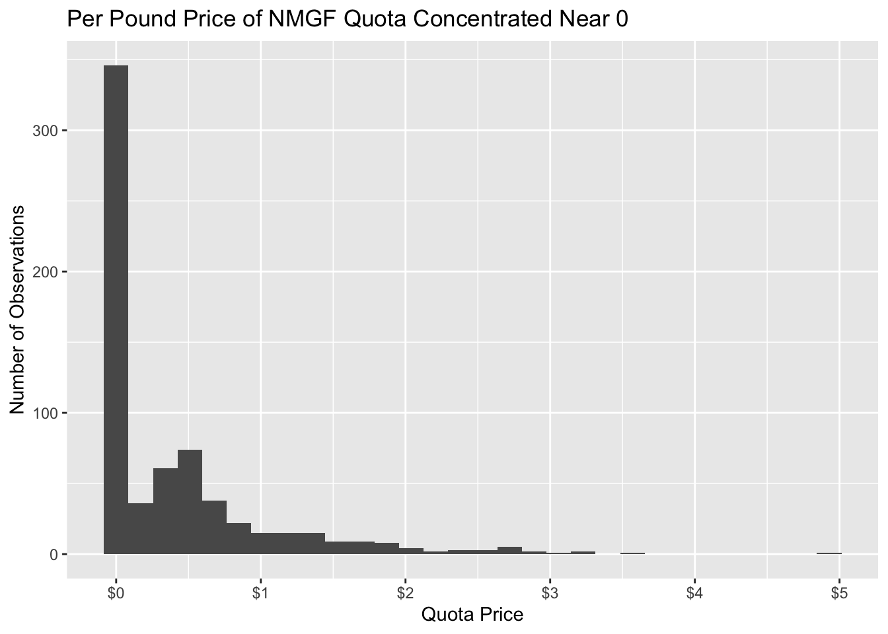
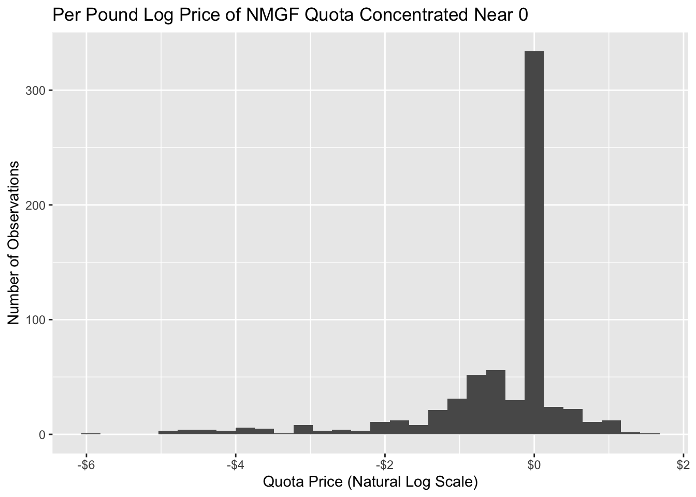
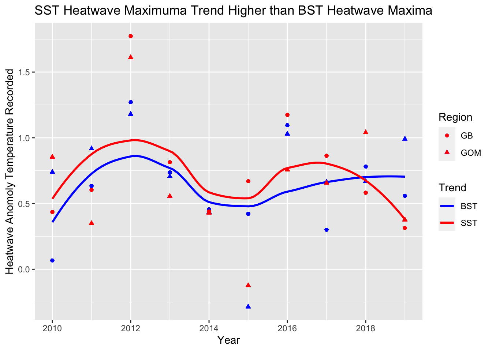
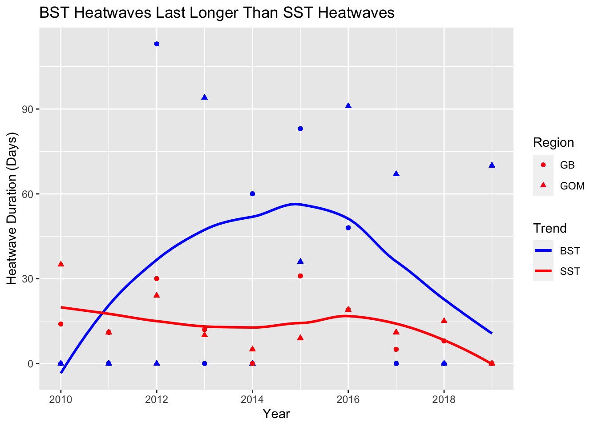
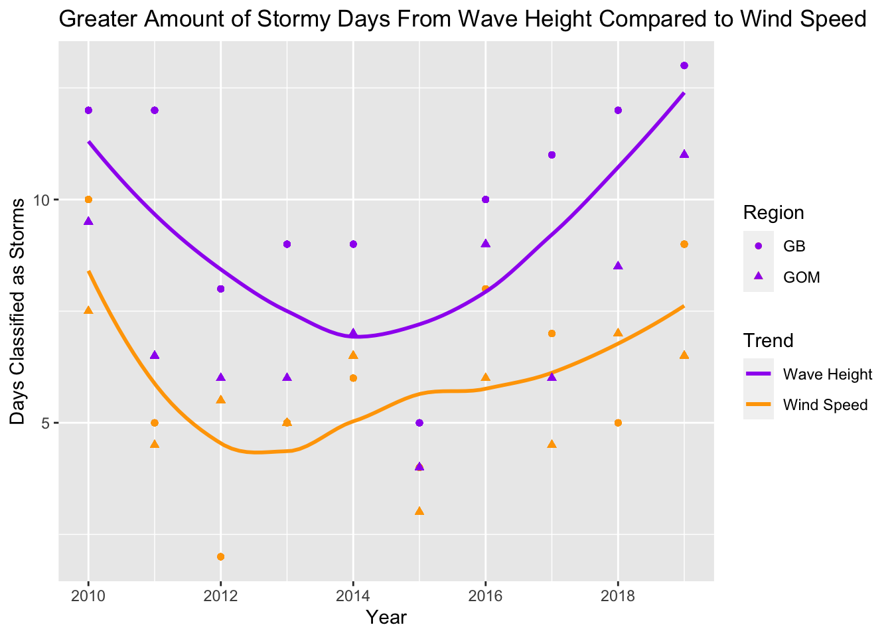

| Exponential | Linear | |
|---|---|---|
| Quota Remaining [H1] | −0.042 | 0.030 |
| Fraction Quota Remaining [H1] | −3.530*** | −11.334** |
| Fraction of Catch Observed [H1] | 0.625 | −4.252^ |
| Q2 [H1] | −0.701*** | −1.364* |
| Q3 [H1] | −0.888*** | −0.641 |
| Q4 [H1] | −1.916*** | −4.039*** |
| Intercept [H1] | 4.050*** | 13.656** |
| Live Price [H2] | 0.604*** | 0.996*** |
| Quota Remaining [H2] | −0.139*** | −0.223*** |
| Fraction of Catch Observed [H2] | 2.341*** | 7.028*** |
| Distance Lag of Quota Remaining [H2] | 0.266** | 1.112*** |
| Inverse Distance Lag of Quota Remaining [H2] | −0.332** | −1.156*** |
| Q2 [H2] | −0.114 | −0.453^ |
| Q3 [H2] | −0.258** | −0.569* |
| Q4 [H2] | −0.228* | −0.665* |
| Intercept [H2] | −0.754* | −2.017*** |
| N | 672 | 672 |
| N [0] | 305 | 305 |
| N [Count] | 367 | 367 |
| R² [0] | 0.342 | 0.341 |
| R² [Count] | 0.518 | 0.172 |
| Log Likelihood | −824.798 | −898.223 |
| ^ p < 0.1, * p < 0.05, ** p < 0.01, *** p < 0.001 |
Fishy Business
Abstract
The Northeast United States Multispecies Fishery (NMGF) implemented a catch-share program in 2010. This program, a modified Individual Transfer Quota (ITQ) system, uses self-organized fishermen groups known as sectors to allocate fishing quotas. However, there are transaction costs associated with inter-sector trades of these quotas, which act as barriers to trade and prevent efficient allocation. At the same time, climate change is causing NMGF stocks to relocate both farther north and into deeper waters to escape a variety of unfavorable environmental conditions. Utilizing panel data from 2010 to 2019, this study examines how climate change, in tandem with the aforementioned transaction costs, influenced NMGF quota market. This study expands on the econometric models used in previous literature to measure NMGF quota market efficacy. Results suggest that sea surface heatwaves impacted quota prices, reflecting increased fishing costs from stocks shifting. While hurdle models and an OLS model were employed, the hurdle models exhibited much stronger evidence of climate change affecting quota prices than the OLS model did. These mixed findings underline the econometric complexity of discerning market efficiency, especially for an immature market like the NMGF quota market. As climate change continues to affect stocks and transaction costs prevent efficient allocation, policymakers and regulators face the challenge of preparing the NMGF ITQ system to mitigate potential environmentally induced collapses, ensuring its resilience in the face of climate change.
1 Introduction
To achieve the economic and biological goals outlined in the Magnuson-Stevens Act, the Northeast Multispecies Fishery (NMGF) implemented a catch-share program in 2010 (Werner, 2022). This catch-share program is a modified Individual Transfer Quota (ITQ) system. As Lee and Demarest (2023) highlight, ITQ systems have been shown to have many positive attributes for fisheries such as increases to productivity (Färe et al., 2015; Walden et al., 2012; Weninger, 1998), to revenue (Kroetz et al., 2017; Scheld et al., 2012), to profitability (Fox et al., 2003), to output quality (Ardini & Lee, 2018; Casey et al., 1995; Kroetz et al., 2019), to prices (Dupont et al., 2005; Pincinato et al., 2022), to safety (Pfeiffer & Gratz, 2016), and to crew compensation (Abbott et al., 2010; Steiner et al., 2018). These attributes make it attractive to fishery regulators and policymakers because it promises to help reach those goals set forth in the Magnuson-Stevens Act.
ITQ systems are a means to organize fishing efforts and prevent over-fishing (Arnason, 2012; Eythórsson, 1996). ITQs works by assigning individuals the right to fish for a certain stock (Arnason, 2012; Eythórsson, 1996). The definition of a stock is up to the managing body, but generally it is a certain species which has reached sexual maturity in its life cycle. This right to fish for a certain stock is known as a quota, and it acts as an upper bound to the amount of volume (measured in weight) of a stock that a fisherman can catch (Arnason, 2012; Werner, 2022). Fishermen are then allowed to either use their quota or transfer the rights to another fishermen (Arnason, 2012; Werner, 2022).
The particular ITQ system used by the NMGF creates an Annual Catch Limit (ACL) for 20 stocks of 13 species (Vasta, 2019). ACLs represents the maximum volume of a stock that can be fished across all fishermen in a year (Vasta, 2019). The NMGF gives portions of the ACLs, known as Annual Catch Entitlements (ACE), to self-organized fishermen groups known as sectors (Vasta, 2019). Sector managers further distribute ACEs to their sector constituents in whatever manner they deem appropriate (Vasta, 2019). The piece of an ACE that a fisherman receives is that fisherman’s quota. The NMGF understands ACE and their distribution are imperfect and allows both inter-sector and intra-sector trading and leasing of these quota allocations, facilitated by sector managers, to promote self-regulation, efficiency, and correct distributional errors (Werner, 2022).
Inter-sector trades are trades that occur between different sectors, while intra-sector trades are trades that occur within the same sectors (Lee & Demarest, 2023). However, there are additional barriers to completing inter-sector trades compared with intra-sector trades. Inter-sector trades require, among other things, that sector managers bargain on behalf of the fishermen from each respective sector (Werner, 2022). This creates additional search and bargaining costs for the fishermen, which leads to higher transaction costs, and thus acts as a barrier to trade (Coase, 1937; Lee & Demarest, 2023). Previous economic literature suggests that this should lead to inefficiencies and non-optimal allocations of these quotas (Arnason, 2012).
Lee and Demarest (2023) have sought to test this claim by considering the determinants of NMGF quota prices. Their research finds that the quota market is largely working as economists would expect. For example, one of the findings of their models is that scarcity of quota matters. Lee and Demarest’s (2023) model predicts that abundant quotas are likely to trade at or near zero. However, this research did not consider the impact climate change has had on the quota market. There is a large amount of evidence documenting that climate change effects the managed groundfish populations by shifting species distributions (Hare et al., 2016; Klein et al., 2017; Nye et al., 2009; Pershing et al., 2021). Due to sectors often being organized based on rough geographic fishing location (Werner, 2022), species relocating would imply an increased reliance on the inter-sector quota trade and lease systems for efficient reallocation (Arnason, 2012). However, the previously highlighted transaction costs likely prevent efficient reallocation, and thus lead to higher quota prices.
Building on Lee and Demarest’s (2023) findings and methodology, I examined how climate change has impacted the NMGF quota market. To begin my analysis, I replicated Lee and Demarest’s (2023) models using the same panel data on NMGF quota prices spanning from 2010 to 2019. Lee and Demarest (2023) used three different models: two were hurdle models (one a linear hurdle and the other an exponential hurdle) and one was an OLS model. All three replicated models lead to the same conclusions that Lee and Demarest (2023) arrived at in their research. Then, I introduced six climate change variables into all three models: maximum heatwave temperature recorded (measured at both the sea surface and the bottom surface), duration of the heatwave (measured at the sea surface and bottom surface), and the number days where the wind speed and wave height were large enough that it would be classified as a storm. However, I ran into multicollinearity issues in all models when including all six climate change variables; consequently, in my final climate change models I opted for only considering the sea surface heatwave maximum temperature, the sea surface heatwave duration, and the wave height observations. This led to a drastic reduction in multicollinearity across all models.
In both my linear and exponential climate change hurdle models I found strong evidence that climate change was impacting the price of NMGF quota. I found that the maximum temperature reached at the sea surface during a heatwave was statistically significantly impacting the probability that a quota would trade for a positive price. That is, I found that as heatwave maxima became more extreme, there was a higher probability that a given quota would trade for a positive price. This makes intuitive economic sense when considering how previous literature outlines how heatwaves affect NMGF stocks. Heatwaves drive stocks into colder waters, which means stocks will either travel north or into deeper water (Klein et al., 2017; Nye et al., 2009). In turn, this increases costs to finding and catching these fish which then gets incorporated into the quota prices. I also found that the duration of a heatwave at the sea surface was probably impacting the price of the quota. That is, I found that as the heatwave duration increased a given stock would trade for a proportionally higher price. This finding also makes sense using similar logic as before. The longer that species moves to escape the heatwave, either farther north or into deeper waters, the harder it is for fishermen to catch the stocks. This translates to higher costs for the fishermen, and the quotas are accordingly adjusted by the market.
In contrast to the conclusions of the hurdle models, I found almost no evidence in the OLS climate model that climate change was impacting quota prices. I did find that number of days that could be classified as a storm due to the wave height was statistically significantly impacting the quota prices; but that was the only climate change variable the OLS model was confident about. These mixed results mean that it is up to interpretation to discern what effects, if any, climate change has on the NMGF quota market. Regardless, climate change is not going away, nor will it stop affecting the NMGF’s stocks (Pershing et al., 2021). Therefore, the same policymakers and regulators who instituted the catch-share program are left with the difficult question of how to prepare the NMGF ITQ system for when, not if, the effects of climate change begin to show, to ensure that it does not collapse like other fisheries in the Gulf of Maine have in the past.
2 Literature Review
Lee and Demarest (2023) published the most recent research examining the catch-share program used by the NMGF. In their research, Lee and Demarest (2023) conducted a two-staged analysis where they first estimated the price per pounds of stocks. Then, they estimated how various characteristics of the quota market (such as output price, quota availability, etc.) impacted the prices of traded quota. In their estimations, they considered all stocks manged by the NMGF from 2010 to 2019. From this research they hoped to understand the determinants of quotas prices and whether the quota market was “healthy” (Lee & Demarest, 2023).
For their first stage, Lee and Demarest (2023) used a linear hedonic model to determine the implied price per pound of quota. This method has been previously used for analyses in both the NMGF (Murphy et al., 2018) and fisheries in British Columbia (Holland, 2013). This price per pound of quota is then used as the dependent variable in their second stage, estimation of what affected the prices of traded quota. Lee and Demarest (2023) employed both an OLS regression and two variations of Cragg’s (1971) hurdle model to determine which variables affected quota prices.
Their OLS model considered live price, quota remaining, fraction of catch observed, distance and inverse distance lag of quota remaining, and the quarter of the fishing year. No non-linear terms were considered. Overall, the model fit the data poorly, with an \(R^2\) value of just 0.273. Yet, most of the considered variables were statistically significant.
When discussing their motivations for using a hurdle model, Lee and Demarest (2023) cite one of the quirks of the NMGF catch-share program - fishermen in the NMGF often barter quotas. That is, they exchange the quota of a stock, say Gulf of Maine Cod (Gadus Morhua), for another stock, say Gulf of Maine Yellowtail Founder (Limanda Ferruginea), which means that the fishermen in this interaction simultaneously act as buyers and sellers. In addition, during this barter it appears that the price of stocks is 0 because there is no monetary compensation for either stock. Furthermore, there are stocks which are legitimately traded for nothing in the market which makes distinguishing between these trades extra challenging (Lee & Demarest, 2023). Thankfully, Cragg’s (1971) hurdle model lends itself to modeling these types of complex goods. Cragg’s hurdle model is a two-part model first modeling the probability of participation and then modeling the outcome probability density. That is, Cragg’s (1971) model begins by estimating the probability that a good will trade at all (participation), and then taking that the trade will occur as a given, the model estimates the price for which that good will trade (outcome). The participation component of the hurdle model examines the probability that the quota will trade at a non-zero value with a probit model. Then, the outcome component examines how factors affect fluctuations in observed, positive, quota prices (Lee & Demarest, 2023). The outcome component is restricted to quotas which have been estimated to have traded for positive values because it is assumed that if the quota traded for anything less than zero the quota holder would rather retain the quota rather than pay to trade it away (Lee & Demarest, 2023).
For the participation component, Lee and Demarest (2023) considered quota remaining, fraction of quota remaining, fraction of catch observed, and an indicator variable for quarter of the fishing year as explanatory variables. While for the outcome component, Lee and Demarest (2023) considered quota remaining, fraction of quota remaining, fraction of catch observed, indicator variable for quarter of the year, inverse distance and distance of weighted spatial lags of quota remaining as explanatory variables.
Lee and Demarest (2023) used two variations of Cragg’s (1971) hurdle model: a linear and an exponential. The participation component of both models is identical, however, the outcome component differs. In the linear hurdle model the outcome component uses a Gaussian distribution. That is, the linear model assumes the data on quota prices follows a Gaussian distribution and fits its predictions accordingly. While in the exponential hurdle model the outcome component uses a log-normal distribution. That is, the exponential model assumes the data on quota prices follows a log-normal distribution and fits its predictions accordingly.
The linear and exponential hurdle models Lee and Demarest (2023) created fit the data similarly, which can be seen in Table 1. Both hurdle models have an \(R^2\) value of about 0.34, an AIC around 920, a BIC of about 990, and a Log-Likelihood around -445. Both found only the fraction of catch observed variable in the participation component to be statistically insignificant. In general, both hurdle models fit the data fairly poorly. Yet, from these hurdle models and the OLS model Lee and Demarest (2023) concluded that because some of the variables, such as quota remaining and live price, are statistically significant the quota market has mixed evidence for acting efficiently. And Lee and Demarest (2023) implicitly assume that an efficient market is a healthy one. However, a drawback to this research is that Lee and Demarest (2023) highlight how environmental changes can affect market dynamics (pg. 5) yet, they do not consider any climate change variables in their models. Likely, considering climate change variable can both improve the explanatory power of their models and create a more cohesive, robust, framework to explain the efficacy of the quota market.
In fact, it is not a new idea that climate change may be impacting the NMGF stocks in negative ways. Klein et al. (2017) begins by noting that New England is being abnormally impacted by the environmental changes fueled from increased levels of concentration of carbon dioxide in the atmosphere (Klein et al., 2017; Pershing et al., 2015). This phenomenon is more colloquially known as climate change, and marine ecosystems are not spared of its influence (Hare et al., 2016; Klein et al., 2017; Nye et al., 2009). Climate change affects these marine ecosystems in a variety of ways: by changing temperature and salinity (Salisbury & Jönsson, 2018; Wallace et al., 2018), by changing levels of pH and dissolved oxygen in the ocean (Salisbury & Jönsson, 2018; Siedlecki et al., 2021), and by shifting ocean currents (Klein et al., 2017), just to name a few. These changes negatively impact the development, reproduction, and harvesting of managed stocks in the NMGF (Klein et al., 2017; Pershing et al., 2015, 2021). That is, climate change decreases the likelihood of stock’s eggs, larvae, and juveniles from developing fully into adults (Klein et al., 2017). Further, climate change decreases the rates of spawning and recruitment for stocks (Klein et al., 2017). In turn, this leads to decreased levels of fully developed stocks year-over-year, on average (Klein et al., 2017).
However, most fish do not sit (or rather swim) idly while their environment around them changes. Their adaptations are largely to seek ecosystems which replicate pre-climate change conditions (Klein et al., 2017). For some fish this means looking for new ecosystems in northern waters, for others (since these stock are groundfish) this means looking for new ecosystems in deeper waters (Klein et al., 2017; Pershing et al., 2021). In general, this means that the distribution of the stocks managed by the NMGF has shifted and will continue to shift in the foreseeable future. In turn, this means that fishermen will have a harder time finding where these stocks now reside. Consequently, economic theory predicts that this will lead to a combination of increased costs and decreased profits for each voyage, which will be incorporated into the market evaluation of quota and ultimately make them more expensive.
Alternatively, using the logic Arnason (2012), this could lead to an increase reliance on trading as fishermen who are already fishing in those new ecosystems get the quotas from the fishermen who fish in the areas where the fish are leaving; thus achieving efficient reallocation of the quotas. Arnason (2012) discusses the importance of property rights for fisheries achieving economic efficiency. Specifically, he highlights the challenges faced in achieving perfect property rights in fisheries when compared to a variety of other systems that use natural resources, such as farming and logging. Arnason (2012) claims that there are four factors to judge a good’s property rights: exclusivity, durability, security, and tradability (also called transferability). When one of these components are not “perfect,” economic efficiency cannot be achieved (Arnason, 2012). This is a problem for fisheries because often by the nature of the good, and the systems used to regulate their use, “imperfect” property rights are implemented. Arnason (2012) notes that while a variety of systems have been used, the ITQ system seems to be the best system, both in theory and practice, at preserving the property rights for fishermen. It is obvious, then, that the effectiveness of fishery management systems in generating efficiency positively depends on their ability to create, maintain, and protect, fishermen’s individual property rights (Arnason, 2012). Hence, externalities which act as barriers to the transferability of ITQ’s, in any capacity, limit the economic efficiency of those ITQ’s. Equivalently, this means that the quotas in the NMGF are non-optimally distributed because of the transaction costs acting as barriers to trade. Further, if climate change does lead to an increased reliance on trading to get the quota to where the fish are, this will lead to more inefficiencies as transaction costs compound between fishermen.
3 Economic Model
The cornerstone of this research is Cragg’s (1971) hurdle model. Lee and Demarest (2023) used both the linear and exponential versions of this model in their analysis of quota market efficiency. We can define both version of Cragg’s (1971) hurdle model by first considering a probit analysis model where the probability that an event will occur at \(t\), \(p(E_t)\), is given by,
\[ p(E_t)=\int^{X'_t\beta}_{-\infty}(2\pi)^{-\frac{1}{2}}\exp\{-z^2/2\}dz. \tag{1}\]
Where \(X_t\) is a \(K\times1\) vector of the values of the independent variable at observation \(t\) and \(\beta\) is a vector of coefficients (Cragg, 1971). Then, Cragg (1971) designates the cumulative unit normal as,
\[ C(z)=\int_{-\infty}^z(2\pi)^{-\frac{1}{2}}\exp\{-t^2/2\}dt. \tag{2}\]
Let \(q_t\) be defined the desired acquisition of a commodity and let \(y_t\) be defined as the actual acquisition of the same commodity, both at \(t\). We can generate \(q_t\) as,
\[ q_t=X'_t\gamma+\epsilon_t, \tag{3}\]
where \(\gamma\) is a vector of coefficients and \(\epsilon_t\) is independently and normally distributed, with mean zero and variance \(\sigma^2\) (Cragg, 1971). In a perfect market, the following statements hold: if \(q_t \le 0\) then \(y_t=0\) and if \(q_t > 0\) then \(q_t=y_t\), which should make intuitive sense (Cragg, 1971). Simply put, these statements say that agents who do not want a good will not buy a good (if \(q_t \le 0\) then \(y_t=0\)), and agents who do want a good will buy the amount of the good that they desire (if \(q_t > 0\) then \(q_t=y_t\)). However, a principle motivator for this research is to examine how transaction costs impact fishermen’s ability trade quota and the impact this has on quota prices. Transaction costs imply that there exists \(q_t>0\) such that \(y_t\neq q_t\) (Cragg, 1971). We can then express the probability that \(y_t=0\) as,
\[ f(y_t=0|X_{1t},X_{2t})=C(-X'_{1t}\beta). \tag{4}\]
Where \(X_{1t}\) and \(X_{2t}\) are vectors of independent variables at observation \(t\) (not necessarily distinct), and \(\beta\) is a vector of coefficients (Cragg, 1971). Cragg (1971) neglects to note that the vector \(X_{1t}\) is actually the vector of considered variables in the participation component of the hurdle model. Similarly, the vector \(X_{2t}\) is the vector of considered variables in the outcome component of the hurdle model. Correspondingly, the density for values of \(y_t\), which has been truncated to consider only positive values, is given by,
\[ f(y_t|X_{1t},X_{2t})=(2\pi)^{-\frac{1}{2}}\sigma^{-1}\exp\{-(y_t-X'_{2t}\gamma)^2\}/\sigma^2\} C(X'_{1t}\beta)/C(X'_{2t}\gamma/\sigma), \tag{5}\]
for \(y_t>0\). In Equation 5, \(\gamma\) is defined to be a vector of coefficients corresponding to the vector \(X_{2t}\) (Cragg, 1971). Thus, in the model’s output, \(\beta\) and \(\gamma\) are the associated weights for the consider variables in \(X_{1t}\) and \(X_{2t}\), respectively. Thus, Equation 3, Equation 4, and Equation 5 outline Lee and Demarest’s (2023) linear hurdle model.
With some minor tweaks Cragg (1971) outlines Lee and Demarest’s (2023) exponential model. To start, an exponential model assumes that,
\[ \log y_t=X'_{2t}\gamma+\epsilon_t. \tag{6}\]
Where \(\epsilon_t\) is normally distributed, and \(y_t\) is non-zero (Cragg, 1971). This still implies that Equation 4 holds. However, Equation 5 becomes,
\[ f(y_t|X_{1t},X_{2t})=(y_t)^{-1}(2\pi)^{-\frac{1}{2}}\sigma^{-1}\exp\{-(\log y_t-X'_{2t}\gamma)^2/2\sigma^2\} C(X'_{1t}\beta). \tag{7}\]
Thus, Equation 6, Equation 4, and Equation 7 outline Lee and Demarest’s (2023) exponential hurdle model.
4 Empirical Strategy
4.1 Data
There were two sources of data used in this analysis. The first source of data was directly from Lee and Demarest’s (2023) research. They have kindly published all non-confidential data from their research onto GitHub for anyone to access. This means that they have published their estimates for the live price per pound of quota for all stocks from 2010-2019, and all of their data used in the second stage. In exploring their estimates for per pound price of quota, one can easily recognize the attraction of using Cragg’s (1971) hurdle model; having models which can factor in, but not be overly influenced by, observations of data at 0 is important for this data set.
Consider both Figure 1 and Figure 2. Both of these figures vividly demonstrate the abundance of 0’s in this data set. Using more normal econometric modeling techniques, such as an OLS, will likely not give a very accurate picture. Take, for example, Figure 1. An OLS model would be heavily influenced by the 0’s and predict most quotas to trade at or near zero. In addition, and OLS model for Figure 1 would likely never be able to predict a quota price of at least $2. Yet, we see this as not uncommon occurrence in the data. Similarly, an OLS model would never be able to predict the extreme values of less than -$2 on the log scale in Figure 2. These scenarios perfectly encapsulates the advantage of employing the hurdle models. Hurdle models separate their predictions of the 0’s and the rest of the distributions so that they can both make better predictions and tease out what variables underline the different processes. As a note, in Figure 2, the 0’s have been artificially added back into the data set. That is, the natural logarithm is taken of quota prices, which for the 0’s becomes negative infinity. However, I changed those values from negative infinity back to 0 because it is impossible to demonstrate negative infinity on a distribution graph, and the distribution which includes 0’s with the log values is exactly what the exponential hurdle model is trying to calculate.
The other source of data is known as the State of the Ecosystem; it is a database published and maintained by the National Oceanic and Atmospheric Administration (NOAA), and it has a variety of environmental panel data sets. This database was accessed through the “ecodata” R package, which makes interfacing with the database much easier. Specifically, from the ecodata package, I used the “bottom_temp,” “sst,” “heatwave,” and “storms” data sets. The “heatwave,” “bottom_temp,” and “sst” data sets describe the temperature of the Gulf of Maine (GOM) and surrounding marine regions during heatwaves year-over-year. While, the “storms” data set records the wind speeds and wave heights throughout the year to describe when storms have occurred in the GOM and surrounding marine regions. Stocks, which are identified in Lee and Demarest’s (2023) data, belong to either the GOM or GB regions. Thus, while the heatwave and storm data is collected for a variety of different marine regions in the Northeast Continental Shelf, I only consider the data collected for the GOM and George’s Bank (GB) because stocks managed by the NMGF, currently, only reside in those two regions.
Exactly what climate change variables were considered, and why, is discussed in Section 4.2.1. However, to achieve a better sense of what the climate change data looks like, I explore the variables here. Therefore, consider one of the variables of interest which the maximum temperature reached during a heatwave, which is shown in the time series plot, Figure 3. In Figure 3 the red points represent measurements at the sea surface. These measurements show the maximum temperature reached, above what would normally be expected during the heatwave, for heatwaves measure at the sea surface. Exact definitions and models used to determine this are available from NOAA. Also in Figure 3, the blue points represent measurements taken on the bottom surface (the ocean floor). They are defined the same as the red points except the heatwaves are on the bottom surface instead of the sea surface. For both the sea surface temperature (SST) and bottom surface temperature (BST) measurements, there are distinctions made between the locations the measurements were taken. Distinction between heatwaves in the GOM and GB are made by the shape of the scatter-plot point, which are either triangles or circles respectively, to represent each region. In addition, trend lines are also displayed for SST and BST measurements to help aid in following how the SST and BST maxima have fluctuated during the period considered. With the exception of 2019, Figure 3 shows that the SST heatwave maxima have been greater than the BST temperature maxima.
Another variable of interest is the duration of heatwaves in a year, which is show in Figure 4. For the GOM and GB regions, denoted by circles and triangles respectively as points in the scatter-plot, Figure 4 shows the durations (measured in days) of heatwaves throughout the year. The blue points in Figure 4 show heatwaves that occur at the bottom surface of the ocean; while the red points in Figure 4 show heatwaves that occur at the sea surface. In addition, trend lines are provided to show how, over the period considered from 2010 to 2019, the numbers of days classified as heatwaves has fluctuated. Although it appears that the number of days classified as heatwaves have been decreasing recently (especially for the bottom surface), previous biological literature suggests that this is an anomaly in the trend for the GOM and GB regions (Pershing et al., 2015).
Finally, the last climate change variables which were considered were the number of days classified as a storm due to a combination of wave height and wind speeds recorded. The time series plot for the period considered is shown in Figure 5. Similar to both Figure 3 and Figure 4, the triangles and circles represent the region of measurement, GOM and GB respectively, in Figure 5. The orange points in Figure 5 represent days where the wind speeds reached levels such that a day was classified as a storm. The purple points in Figure 5 represent days where the wave heights reached levels such that the day was classified as a storm. Trend lines are included to show how we see an increased amount of storms over the period considered, regardless of measurement technique. From 2010 to 2019, one can easily see that there have been more days that are classified as storms due to the height of the waves than were classified as storms due to the speed of the winds.
4.2 Quota Price Determinants
4.2.1 Hurdle
To begin, I wished to replicate Lee and Demarest’s (2023) findings. Replicating their findings ensures that any conclusions I draw from considering climate change comes from the data. Therefore, to replicate their hurdle model I defined \(t\) to be a stock in a given fishing year. This means that the following vectors are defined in terms of \(t\), which is to say that they are defined specific for a stock in a given year. Thus, I define the vector \(X_{1t}\) to be,
\[ X_{1t}=\begin{bmatrix} QR & FQR & FCO & Q_1 & Q_2 & Q_3 & Q_4\end{bmatrix}. \tag{8}\]
Where \(QR\) is the quota remaining, \(FQR\) (calculated as \(\frac{QR}{ACE}\)) is the percentage of \(QR\) compared to the initial ACE allotment, \(FCO\) is the amount of live pounds caught while under observation, and \(Q_n\) is the \(n\)th quarter of the fishing year (for \(n\in\{1,2,3,4\}\)). Next, I defined the vector \(X_{2t}\) to be,
\[ X_{2t}=\begin{bmatrix} LP & QR & FCO & DLQR & DLQR^{-1} & Q_1 & Q_2 & Q_3 & Q_4 \end{bmatrix}. \tag{9}\]
Where \(LP\) is the estimated live price of the stock, \(DLQR\) is the distance lag of quota remaining, and \(DLQR^{-1}\) is the inverse of the distance lag of quota remaining. To derive the linear hurdle model simply input \(X_{1t}\) and \(X_{2t}\) into Equation 4 and Equation 5, respectively. To derive the exponential model simply input \(X_{1t}\) and \(X_{2t}\) into Equation 4 and Equation 7, respectively. The estimation of these linear and exponential models can be viewed in Table 2. Comparing Table 2 to Lee and Demarest’s (2023) estimates, one can easily ascertain they are very similar but not exactly the same. The negligible differences in estimates is likely algorithmic and due to differences in modeling software. Lee and Demarest (2023) used STATA for their calculations while I used R. Regardless of these trivial differences, it is easy to see that using my models leads to the same conclusions as Lee and Demarest (2023). These conclusions are, in essence, that increases in quota remaining decrease the likelihood that quota will trade for a positive price, quota traded later in the year is less likely to trade for a higher price, increases in the live price of the fish suggests higher prices of quota, and increases in quota remaining are associated with decreases in quota prices (Lee & Demarest, 2023). From these data Lee and Demarest (2023) concluded that the market is working efficiently because these findings are what economists would expect to see in a market. However, as highlighted in both Section 2 and Section 3, climate change has had, and continues to have, drastic impacts on managed stocks. Neglecting to include climate change variables in either of the models from Table 2 could lead to overstated levels of normalcy and efficiency in the quota market. Thus, using Lee and Demarest’s (2023) replicated models I included climate change variables to examine how these variables impact the conclusions of market normalcy and efficiency.
To begin these updated models, I considered several climate change outcomes. I considered how heatwaves impacted quota prices in a given fishing year. For these heatwaves I considered both their duration and the maximum temperature reached. Further, I segregated these heatwaves by whether the BST or the SST triggered the heatwave measurement. In addition, I also considered number of days in a given fishing year which were categorized as a storm by either their wave height or wind speeds. While the increased occurrence of all six of these variables represents climate change (Agel et al., 2015; Huntington et al., 2016; Klein et al., 2017), they represent two different types of effects on the quota market. The heatwave duration and maximums for both SST and BST represent how climate change is affecting the managed stocks since (I assume) that fishermen do not alter their fishing efforts due to oceanic heatwaves. However, I do assume that the wind speed and wave height variables impact fishing effort. I assume that fish are not affected by either the wave height at the surface or the wind speeds above because they typically dwell close to the bottom of the ocean. Yet, the fishermen cannot go out and fish when wave height or wind speeds reach a certain threshold due to safety of crew and vessels. Therefore, the heatwave climate change variables represents shocks to the stocks, while the storm climate change variables represent shocks to fishing effort. I included all six of these climate change variables in both the participation and outcome portions of the hurdle models. This would mean that the vector \(X_{1t}\) becomes,
\[ X_{1t}=\begin{bmatrix} QR & ... & Q_4 & HW_{BST,Max} & HW_{SST,Max} & HW_{BST,D} & HW_{SST,D} & H & S\end{bmatrix}. \tag{10}\]
Where \(HW_{BST,Max}\) is the maximum BST recorded during a heatwave, \(HW_{SST,Max}\) is defined similarly for SST, \(HW_{BST,D}\) is the duration of the heatwave recorded from the BST, \(HW_{SST,D}\) is also defined but for SST, \(H\) is the number of days which were classified as a storm due to wave height, and \(S\) is the number of days classified as a storm due to wind speeds.
Using the same definitions as in Equation 10, the vector \(X_{2t}\) becomes,
\[ X_{2t}=\begin{bmatrix}LP & ... & Q_4 & HW_{BST,Max} & HW_{SST,Max} & HW_{BST,D} & HW_{SST,D} & H & S\end{bmatrix}. \tag{11}\]
Then, exactly similar to replicating Lee and Demarest’s (2023) models, I plug in the updated \(X_{1t}\) and \(X_{2t}\) vectors into Equation 4 and Equation 5 for the linear model, and into Equation 4 and Equation 7 for the exponential model. The results of including these six climate change variables in both components of each model can be seen in Table 3. In sum, I find that including all of the climate change variables does not demonstrate strong evidence that climate change is affecting the quota prices in either the participation or outcome components of the hurdle models. There are a few exceptions to this, such as the wind variable in the participation component, but largely these models find that climate change variables do not appear to affect quota prices. In addition, these models finds that Lee and Demarest’s (2023) explanatory variables maintain their sign and statistical significance. Therefore, at first glance it may appear that these models has been created in vain. However, consider that BST and SST heatwave duration and maximum are likely highly correlated since a heatwave would cause all parts of the water-column to become warmer (Figure 3). It is also likely that both the wave height and wind speeds are highly correlated since they are both recorded as measurements of storms (Figure 5). Thus, it is likely that these models suffers from some level of multicollinearity when including all these variables.
To remedy this multicollinearity consider the updated \(X_{1t}\) and \(X_{2t}\) vectors which are defined as,
\[ X_{1t}=\begin{bmatrix} QR & ... & Q_4 & HW_{SST,Max} & HW_{SST,D} & H \end{bmatrix}, \tag{12}\]
\[ X_{2t}=\begin{bmatrix}LP & ... & Q_4 & HW_{SST,Max} & HW_{SST,D} & H \end{bmatrix}. \tag{13}\]
Where \(HW_{SST,Max}\), \(HW_{SST,D}\), and \(H\) are defined the same as in Equation 10 and Equation 11. Then input Equation 12 and Equation 13 into Equation 4 and Equation 5 for the linear hurdle model, and into Equation 4 and Equation 7 for the exponential model. The output of these models can be seen in Table 4. These models in Table 4 remove any multicollinearity present in Table 3 by removing one of each of the types of climate change variables.
To the savvy reader it may seem strange to choose SST when the managed stocks are groundfish. That is, the managed stocks are known for staying near the bottom. It would appear to make more sense to consider BST instead. While it is true that the groundfish spend more of their time lower in water column, the data on BST is not as rich or precise as the SST data. SST has been recorded for longer in the “ecodata” database in addition it to being more spatially precise. By “spatially precise” I mean that there are no questions about where the temperature data was gathered with the SST data set. While with the BST temperature data it is often unclear what depth the bottom surface was. Because the depth the BST was recorded at is unclear this could lead to measurement error where heatwaves are not properly recorded. Thus, I chose to select a variable that was more sensitive to collecting heatwave data. In addition, I also selected wave height instead of wind speed. I assume that wave height would be a better indicator of whether the fishing vessels would embark since fishing vessels do not rely on wind for operation but they do rely on waves being within a reasonable height in order to operate their machinery; thus, wave height seemed to be a better proxy for fishing effort.
Using the logic of Lee and Demarest (2023) the new hurdle models in Table 4 say that climate change is a determinant of quota prices because both SST heatwave duration and temperature are statistically significant during both components of the hurdle models. For example, in the participation component of the models, heatwave maximum has a large magnitude and a high degree of statistical significance, while in the outcome component heatwave duration is the variable with a large magnitude and high degree of statistical significance. Thus, both models are describing that the higher the temperatures reached in a heatwave are associated an increase in the probability that a quota will trade for a positive price. Furthermore, the larger durations of heatwaves are associated with quotas being traded for higher prices. Moreover, we can say that climate change is not causing reduced fishing efforts which is demonstrated by wave height not being statistically significant in either of the components of the hurdle models. This helps provide some evidence to our hypothesis, which was that climate change is affecting fishermen’s ability to find and catch fish, and barriers to trade prevent efficient reallocation, which results in higher quota prices. Were barriers to trade not present in the quota market, then we would expect for fishermen to trade away their quotas to those fishermen who are farther north or fishing in deeper waters where the fish are (Arnason, 2012). Instead, what we see in this model is that fishermen hold onto their quota and continue to fish at increased costs which then results in an increased price of the per pound price of quotas because trading the quotas has such high barriers to trade. This reluctance to trade appears in the form of the statistical significance of the SST climate change variables in both hurdle models.
4.2.2 OLS
Of course, while the hurdle models were the cornerstone of Lee and Demarest’s (2023) analysis, they also consider an OLS model. In their OLS model, they used quota price, \(QP\), as the dependent variable and all the explanatory variables from the outcome component (Equation 9) of the hurdle models as the independent variables in their regression. Thus, we can define their OLS model as,
\[ \begin{align*} QP = \alpha_0 &+ \alpha_1LP + \alpha_2QR + \alpha_3FCO + \alpha_5DLQR + \alpha_6DLQR^{-1} \\&+ \alpha_7Q_1 + \alpha_8Q_2 + \alpha_9Q_3 + \alpha_{10}Q_4 + \varepsilon. \end{align*} \tag{14}\]
Where \(LP\), \(QR\), \(FCO\), \(DLQR\), \(DLQR^{-1}\), and \(Q_n\) (for \(n\in\{1,2,3,4\}\)) are defined the same as they were in Equation 9, \(\alpha_0\) is the intercept term, \(\alpha_1,...,\alpha_{10}\) are the coefficients for each independent variable, and \(\varepsilon\) is the error term. The output of this regression can be seen in Table 5. Similar to the replication of Lee and Demarest’s (2023) hurdle models (Table 2), my replication is almost identical - signs and statistical significant are almost always the same. However, I do find that the signs on the distance lag and inverse distance lag variables are flipped in my replication. While Lee and Demarest (2023) found that \(\alpha_5\) is negative and \(\alpha_6\) is positive, I find that \(\alpha_5\) is positive and \(\alpha_6\) is negative. Again the only methodological difference between my replication and Lee and Demarest’s (2023) model is software; therefore, it is peculiar to find such a deviation. Regardless, Lee and Demarest (2023) do not spend much time discussing interpretation of \(DLQR\) or \(DLQR^{-1}\) from the OLS model in their research. Hence, I’ll assume that such a difference does not impact the integrity of my replication model significantly. Lee and Demarest (2023) found that while the OLS model does a worse job at explaining variations in quota prices, it reinforces their conclusions that the market is acting as expected. Therefore, they included it as another piece of evidence in their research.
As with their hurdle models, Lee and Demarest (2023) did not consider any climate change variables in their OLS model. Similar to their hurdle models, by not including any climate change variables in their OLS model Lee and Demarest (2023) may be overstating levels of normalcy and efficiency in the quota market. Thus, I included the climate change variables discussed in Section 4.2.1 to their OLS model to see how it impacted their findings. Instead of performing two regressions, one with all six climate change factors considered (which probably suffers from multicollinearity), I elected to only consider the variables in Equation 13. That is, I only considered the climate change variables of \(HW_{SST,Max}\), \(HW_{SST,D}\), and \(H\). Thus, we can define the new OLS regression as Equation 14 but including climate change variables,
\[ QP = \alpha_0 + ... + \alpha_{10}Q_4 + \alpha_{11}HW_{SST, Max} + \alpha_{12}HW_{SST, D} + H + \varepsilon. \tag{15}\]
Where \(HW_{SST,Max}\), \(HW_{SST,D}\), and \(H\) are defined the same as they are in Equation 13, and \(\varepsilon\) is the error term. The output for the model can be seen in Table 6.
The output in Table 6 is much more interesting than the output from climate change hurdle models (Table 4). It is immediately apparent in this model that our climate change variables do not have anywhere near the same statistical significance they had in Table 4. That is, both the variables \(HW_{SST,Max}\) and \(HW_{SST,D}\) are not statistically significant, which is the standard that Lee and Demarest (2023) and I have been using to determine whether our respective hypothesis hold any weight. However, our effort-related climate change variable \(H\), which represents days where the wave heights could be classified as a storm, is statistically significant. Furthermore, this OLS model finds that Lee and Demarest’s (2023) variables are still statistically significant. Therefore, this model, Table 6, is suggesting that climate change is not affecting the quota market; this stands starkly in contrast to the conclusions drawn from the hurdle models in Table 4.
However, looking at the goodness of fit statistics for Lee and Demarest’s (2023) original model, my replication (Table 5), and the climate change model (Table 6), one can see that these models do not describe the data very well. The \(R^2\) for these models range from a minimum of 0.236 to a maximum of 0.273. The goodness of fit statistics for Lee and Demarest’s (2023) original hurdle model, my replicate hurdle model (Table 2), and my climate change hurdle model (Table 4), are all better than their respective OLS counterparts. That is, the estimated \(R^2\) values are higher in the hurdle models than in the OLS models. Thus, it seems hasty to rush to the conclusion that the quota market is behaving efficiently. While there is evidence that it is acting as expected, in the hurdle models and in the OLS models, there is also evidence that climate change is also impacting the market. Given the mountain of evidence (discussed in Section 2) which says that climate change is heavily present in the Gulf of Maine and influencing its marine life (Pershing et al., 2015, 2021) it is bizarre that these climate change variables are not having a larger impact.
5 Conclusion and Direction for Future Research
Lee and Demarest (2023) investigated whether the NMGF quota market was behaving efficiently and normally. Generally, they came to the conclusion that the NMGF was behaving normally, however they did not consider the impact that climate change has had on the quota market. Thus, I replicated Lee and Demarest’s (2023) models and then included several climate change predictors in their models. I found mixed evidence that climate change is influencing the prices of quotas. While there was strong evidence in the hurdle models (Table 4), there was virtually no evidence in the OLS model (Table 6).
The inclusion of climate change predictors in the hurdle models did not change the significance of the metrics used by Lee and Demarest (2023), however the significance of my climate change variables is suggestive that the market is not acting as normally or as efficiently as Lee and Demarest (2023) portrayed. The lack of statistical significance on my effort related climate change variable casts doubt on the likelihood that climate change is altering price changes through fishing effort. Hence, my models come to the conclusion that climate change is shifting stock populations which in turn is making it harder for fishermen to find these fish stocks. This conclusion is consistent with what we would expect to see given the heavy documentation of the effects of climate change on the stocks in the NMGF (Klein et al., 2017; Pershing et al., 2015). Furthermore, the statistical significance of these stock shifting climate change variables is evidence that the quota market is not acting efficiently. The significance of these variables implies that something is preventing fishermen in the NMGF from trading their quotas. Otherwise, the fishermen would opt for trading the quota to those who have lower costs, which is well documented in fisheries economics literature (Arnason, 2012).
In contrast, the inclusion of climate change predictors in the OLS model was not statistically significant. That is, the OLS model found that climate change does not have an impact on quota prices in the NMGF. In addition, the inclusion of these climate change predictors did not change the significance of Lee and Demarest’s (2023) metrics of normalcy and efficiency. While it is possible that this model is correct, it feels unlikely given the mountains of evidence which suggests that climate change is affecting the stocks (Klein et al., 2017; Pershing et al., 2015) and thus the quota market to some degree.
If we are to accept the conclusions of the OLS model, then we are left with the same conclusions that Lee and Demarest (2023) came to. Which is that the quota market in the NMGF is acting normally, and somewhat efficiently. However, if we accept the conclusions of the hurdle models, then we are left with the impression that the quota market is not acting efficiently. Then, one of the most obvious culprits of this inefficiency is the barriers to trade created by the sector management system. That is, the requirement to use sector managers to facilitate and complete inter-sector trades. It is well documented that in order for markets to work well they must have many buyers and sellers, perfect information, no barriers to trade, no economies of scale, and minimal transaction costs (Lee & Demarest, 2023). Yet, under the sector management system many of these requirements are violated. For example, there is not perfect information about quota prices since intra-sector trades are not reported. Furthermore, agents willing to trade quota, and at what quantity and price, are only known by their respective sector manager - creating further asymmetric information between potential buyers and sellers. In addition, having to go through sector managers creates transaction costs since it fabricates extra steps beyond the trading parties simply trading. Thus, it feels natural and logical to consider using other market trading structures which are shown to remove such inefficiencies. However, this consideration is left to the stakeholders in the NMGF, such as the fishermen and NOAA, since it is their livelihoods that this change would be impacting.
Another, and arguably the most likely, reason for this discrepancy between the hurdle and OLS models is that quota markets are not a great place for testing market efficiency. There is literature which shows that even mature financial markets struggle to maintain efficient levels at all times (Fama, 1998; Malkiel, 2003). This becomes exacerbated when considering immature quota markets (Pinkerton & Edwards, 2009), such as the NMGF quota market (Lee & Demarest, 2023). The lack of ability to discern efficiency in immature markets is likely the main driver of the discrepancy between my climate change models. Thus, it is possible that either of the conclusions drawn from my models are incorrect, and simply a fluke of the immature data.
Consequently, since I cannot confidently conclude what impacts climate change is having on the NMGF quota market, there are many avenues left for further research. One such path would be examining the assumption that as climate change drives stocks to move, fishermen respond by trading away their quotas rather than continuing to fish at higher costs. Examining the drivers of quota trade, rather than quota price, would be useful in identifying areas where transaction costs are high. For example, if it is found that it is much more likely for fishermen to complete inter-sector trades between sectors with the same manager, then that would be evidence for the sector management system creating transaction costs, market inefficiencies, and preventing trade. Another avenue for further research could be considering other climate change variables. There are many other climate change variables, not considered in this research, which are impacting the Gulf of Maine and surrounding marine regions; these variables have no shortage of data available. For example, algae blooms (Clark et al., 2022; Record et al., 2021), increase ocean acidification (Salisbury & Jönsson, 2018; Siedlecki et al., 2021), and ocean increased salinity (Salisbury & Jönsson, 2018; Wallace et al., 2018), are linked to climate change and have been documented impacting different stocks in the NMGF to varying degrees (Klein et al., 2017). Exploration of these topics is likely to be the most fruitful, and help uncover the true impact of climate change on the NMGF quota market.
6 References
Abbott, J. K., Garber-Yonts, B., & Wilen, J. E. (2010). Employment and Remuneration Effects of IFQs in the Bering Sea/Aleutian Islands Crab Fisheries. Marine Resource Economics, 25(4), 333–354. https://doi.org/10.5950/0738-1360-25.4.333
Agel, L., Barlow, M., Qian, J.-H., Colby, F., Douglas, E., & Eichler, T. (2015). Climatology of Daily Precipitation and Extreme Precipitation Events in the Northeast United States. Journal of Hydrometeorology, 16(6), 2537–2557. https://doi.org/10.1175/JHM-D-14-0147.1
Ardini, G., & Lee, M.-Y. (2018). Do IFQs in the US Atlantic Sea Scallop Fishery Impact Price and Size? Marine Resource Economics, 33(3), 263–288. https://doi.org/10.1086/698199
Arnason, R. (2012). Property Rights in Fisheries: How Much Can Individual Transferable Quotas Accomplish? Review of Environmental Economics and Policy, 6(2), 217–236. https://doi.org/10.1093/reep/res011
Casey, K. E., Dewees, C. M., Turris, B. R., & Wilen, J. E. (1995). The Effects of Individual Vessel Quotas in the British Columbia Halibut Fishery. Marine Resource Economics, 10(3), 211–230. https://doi.org/10.1086/mre.10.3.42629588
Clark, S., Hubbard, K. A., Ralston, D. K., McGillicuddy, D. J., Stock, C., Alexander, M. A., & Curchitser, E. (2022). Projected effects of climate change on Pseudo-nitzschia bloom dynamics in the Gulf of Maine. Journal of Marine Systems, 230, 103737. https://doi.org/10.1016/j.jmarsys.2022.103737
Coase, R. H. (1937). The Nature of the Firm. Economica, 4(16), 386–405. https://doi.org/10.1111/j.1468-0335.1937.tb00002.x
Cragg, J. G. (1971). Some Statistical Models for Limited Dependent Variables with Application to the Demand for Durable Goods. Econometrica, 39(5), 829. https://doi.org/10.2307/1909582
Dupont, D. P., Fox, K. J., Gordon, D. V., & Grafton, R. Q. (2005). Profit and Price Effects of Multi-species Individual Transferable Quotas. Journal of Agricultural Economics, 56(1), 31–57. https://doi.org/10.1111/j.1477-9552.2005.tb00121.x
Eythórsson, E. (1996). Theory and practice of ITQs in Iceland. Privatization of common fishing rights. Marine Policy, 20(3), 269–281. https://doi.org/10.1016/0308-597X(96)00009-7
Fama, E. F. (1998). Market efficiency, long-term returns, and behavioral finance. Journal of Financial Economics, 49(3), 283–306. https://doi.org/10.1016/S0304-405X(98)00026-9
Färe, R., Grosskopf, S., & Walden, J. (2015). Productivity change and fleet restructuring after transition to individual transferable quota management. Marine Policy, 62, 318–325. https://doi.org/10.1016/j.marpol.2015.05.015
Fox, K. J., Grafton, R. Q., Kirkley, J., & Squires, D. (2003). Property rights in a fishery: Regulatory change and firm performance. Journal of Environmental Economics and Management, 46(1), 156–177. https://doi.org/10.1016/S0095-0696(02)00027-X
Hare, J. A., Morrison, W. E., Nelson, M. W., Stachura, M. M., Teeters, E. J., Griffis, R. B., Alexander, M. A., Scott, J. D., Alade, L., Bell, R. J., Chute, A. S., Curti, K. L., Curtis, T. H., Kircheis, D., Kocik, J. F., Lucey, S. M., McCandless, C. T., Milke, L. M., Richardson, D. E., … Griswold, C. A. (2016). A Vulnerability Assessment of Fish and Invertebrates to Climate Change on the Northeast U.S. Continental Shelf. PLOS ONE, 11(2), e0146756. https://doi.org/10.1371/journal.pone.0146756
Holland, D. S. (2013). Making Cents Out of Barter Data from the British Columbia Groundfish ITQ Market. Marine Resource Economics, 28(4), 311–330. https://doi.org/10.5950/0738-1360-28.4.311
Huntington, T. G., Balch, W. M., Aiken, G. R., Sheffield, J., Luo, L., Roesler, C. S., & Camill, P. (2016). Climate change and dissolved organic carbon export to the Gulf of Maine. Journal of Geophysical Research: Biogeosciences, 121(10), 2700–2716. https://doi.org/10.1002/2015JG003314
Klein, E. S., Smith, S. L., & Kritzer, J. P. (2017). Effects of climate change on four New England groundfish species. Reviews in Fish Biology and Fisheries, 27(2), 317–338. https://doi.org/10.1007/s11160-016-9444-z
Kroetz, K., Sanchirico, J. N., Galarza Contreras, E., Corderi Novoa, D., Collado, N., & Swiedler, E. W. (2019). Examination of the Peruvian Anchovy Individual Vessel Quota (IVQ) system. Marine Policy, 101, 15–24. https://doi.org/10.1016/j.marpol.2018.11.008
Kroetz, K., Sanchirico, J. N., Peña-Torres, J., & Novoa, D. C. (2017). Evaluation of the Chilean Jack Mackerel ITQ System. Marine Resource Economics, 32(2), 217–241. https://doi.org/10.1086/690771
Lee, M.-Y., & Demarest, C. (2023). Groundfish quota prices. Fisheries Research, 260, 106605. https://doi.org/10.1016/j.fishres.2022.106605
Malkiel, B. G. (2003). The Efficient Market Hypothesis and Its Critics. Journal of Economic Perspectives, 17(1), 59–82. https://doi.org/10.1257/089533003321164958
Murphy, T., Ardini, G., Vasta, M., Kitts, A., Demarest, C., Walden, J., & Caless, D. (2018). 2015 Final Report on the Performance of the Northeast Multispecies (Groundfish) Fishery (May 2007 – April 2016). https://doi.org/10.25923/vzmy-2y05
Nye, J., Link, J., Hare, J., & Overholtz, W. (2009). Changing spatial distribution of fish stocks in relation to climate and population size on the Northeast United States continental shelf. Marine Ecology Progress Series, 393, 111–129. https://doi.org/10.3354/meps08220
Pershing, A. J., Alexander, M. A., Brady, D. C., Brickman, D., Curchitser, E. N., Diamond, A. W., McClenachan, L., Mills, K. E., Nichols, O. C., Pendleton, D. E., Record, N. R., Scott, J. D., Staudinger, M. D., & Wang, Y. (2021). Climate impacts on the Gulf of Maine ecosystem. Elementa: Science of the Anthropocene, 9(1), 00076. https://doi.org/10.1525/elementa.2020.00076
Pershing, A. J., Alexander, M. A., Hernandez, C. M., Kerr, L. A., Le Bris, A., Mills, K. E., Nye, J. A., Record, N. R., Scannell, H. A., Scott, J. D., Sherwood, G. D., & Thomas, A. C. (2015). Slow adaptation in the face of rapid warming leads to collapse of the Gulf of Maine cod fishery. Science, 350(6262), 809–812. https://doi.org/10.1126/science.aac9819
Pfeiffer, L., & Gratz, T. (2016). The effect of rights-based fisheries management on risk taking and fishing safety. Proceedings of the National Academy of Sciences, 113(10), 2615–2620. https://doi.org/10.1073/pnas.1509456113
Pincinato, R. B. M., Asche, F., Cojocaru, A. L., Liu, Y., & Roll, K. H. (2022). The Impact of Transferable Fishing Quotas on Cost, Price, and Season Length. Marine Resource Economics, 37(1), 53–63. https://doi.org/10.1086/716728
Pinkerton, E., & Edwards, D. N. (2009). The elephant in the room: The hidden costs of leasing individual transferable fishing quotas. Marine Policy, 33(4), 707–713. https://doi.org/10.1016/j.marpol.2009.02.004
Record, N. R., Countway, P. D., Kanwit, K., & Fernández-Robledo, J. A. (2021). Rise of the rare biosphere. Elementa: Science of the Anthropocene, 9(1), 00056. https://doi.org/10.1525/elementa.2020.00056
Salisbury, J. E., & Jönsson, B. F. (2018). Rapid warming and salinity changes in the Gulf of Maine alter surface ocean carbonate parameters and hide ocean acidification. Biogeochemistry, 141(3), 401–418. https://doi.org/10.1007/s10533-018-0505-3
Scheld, A. M., Anderson, C. M., & Uchida, H. (2012). The Economic Effects of Catch Share Management: The Rhode Island Fluke Sector Pilot Program. Marine Resource Economics, 27(3), 203–228. https://doi.org/10.5950/0738-1360-27.3.203
Siedlecki, S., Salisbury, J., Gledhill, D., Bastidas, C., Meseck, S., McGarry, K., Hunt, C., Alexander, M., Lavoie, D., Wang, Z., Scott, J., Brady, D., Mlsna, I., Azetsu-Scott, K., Liberti, C., Melrose, D., White, M., Pershing, A., Vandemark, D., … Morrison, R. (2021). Projecting ocean acidification impacts for the Gulf of Maine to 2050. Elementa: Science of the Anthropocene, 9(1), 00062. https://doi.org/10.1525/elementa.2020.00062
Steiner, E., Russell, S., Vizek, A., & Warlick, A. (2018). Crew in the West Coast Groundfish Catch Share Program: Changes in Compensation and Job Satisfaction. Coastal Management, 46(6), 656–676. https://doi.org/10.1080/08920753.2018.1522495
Vasta, M. (2019). Network Analysis of the Northeast Multispecies (Groundfish) Annual Catch Entitlement (ACE) Transfer Network (May 2010 – April 2016). https://doi.org/10.25923/cnf1-mx82
Walden, J. B., Kirkley, J. E., Färe, R., & Logan, P. (2012). Productivity Change under an Individual Transferable Quota Management System. American Journal of Agricultural Economics, 94(4), 913–928. https://doi.org/10.1093/ajae/aas025
Wallace, E. J., Looney, L. B., & Gong, D. (2018). Multi-Decadal Trends and Variability in Temperature and Salinity in the Mid-Atlantic Bight, Georges Bank, and Gulf of Maine. Journal of Marine Research, 76(5), 163–215. https://doi.org/10.1357/002224018826473281
Weninger, Q. (1998). Assessing Efficiency Gains from Individual Transferable Quotas: An Application to the Mid‐Atlantic Surf Clam and Ocean Quahog Fishery. American Journal of Agricultural Economics, 80(4), 750–764. https://doi.org/10.2307/1244061
Werner, S. L. (2022). An Economic Analysis of the Multispecies Catch Share Program. https://doi.org/10.25923/ER07-W293
7 Tables
| Goodness of Fit | Exponential | Linear |
| R² | 0.315 | 0.367 |
| AIC | 916 | 932 |
| BIC | 987 | 1008 |
| Log Likelihood | -442 | -449 |
| Exponential Climate | Linear Climate | |
|---|---|---|
| Intercept [H1] | 4.688*** | 5.047*** |
| Quota Remaining [H1] | −0.138*** | −0.006 |
| Fraction Quota Remaining [H1] | −3.857*** | −3.365*** |
| Fraction of Catch Observed [H1] | 1.878* | 0.002 |
| Q2 [H1] | −0.762*** | −0.638** |
| Q3 [H1] | −1.038*** | −0.745** |
| Q4 [H1] | −2.098*** | −1.691*** |
| BST Heatwave Maximum [H1] | 0.391 | 0.745* |
| SST Heatwave Maximum [H1] | 0.239 | 0.084 |
| BST Heatwave Duration [H1] | −0.004* | −0.005* |
| SST Heatwave Duration [H1] | −0.007 | −0.016 |
| Storm Days (Waves) [H1] | 0.041 | 0.040 |
| Storm Days (Wind) [H1] | −0.183*** | −0.210*** |
| Intercept [H2] | −1.720*** | −12.279*** |
| Live Price [H2] | 0.865*** | 3.143*** |
| Quota Remaining [H2] | −0.177*** | −0.853** |
| Fraction of Catch Observed [H2] | 3.160*** | 22.034*** |
| Distance Lag of Quota Remaining [H2] | 0.198 | 2.787*** |
| Inverse Distance Lag of Quota Remaining [H2] | −0.286 | −2.535** |
| Q2 [H2] | −0.037 | −0.501 |
| Q3 [H2] | −0.437** | −1.576* |
| Q4 [H2] | −0.362* | −1.198 |
| BST Heatwave Maximum [H2] | −0.120 | −3.656** |
| SST Heatwave Maximum [H2] | −0.220 | 0.692 |
| BST Heatwave Duration [H2] | 0.000 | 0.008 |
| SST Heatwave Duration [H2] | 0.018* | 0.101* |
| Storm Days (Waves) [H2] | −0.037 | −0.224 |
| Storm Days (Wind) [H2] | 0.125** | 0.310 |
| N | 672 | 672 |
| N [0] | 305 | 305 |
| N [Count] | 367 | 367 |
| R² [0] | 0.396 | 0.406 |
| R² [Count] | 0.454 | 0.285 |
| Log Likelihood | −827.253 | −825.558 |
| ^ p < 0.1, * p < 0.05, ** p < 0.01, *** p < 0.001 |
| Exponential Climate SST | Linear Climate SST | |
|---|---|---|
| Intercept [H1] | 4.020*** | 4.090*** |
| Quota Remaining [H1] | −0.127*** | −0.054 |
| Fraction Quota Remaining [H1] | −3.721*** | −3.447*** |
| Fraction of Catch Observed [H1] | 1.912** | 1.064 |
| Q2 [H1] | −0.749*** | −0.675*** |
| Q3 [H1] | −1.010*** | −0.853*** |
| Q4 [H1] | −2.025*** | −1.806*** |
| SST Heatwave Maximum [H1] | 0.670*** | 0.703*** |
| SST Heatwave Duration [H1] | −0.014^ | −0.019* |
| Storm Days (Waves) [H1] | −0.033 | −0.031 |
| Intercept [H2] | −1.521*** | −10.906*** |
| Live Price [H2] | 0.898*** | 3.629*** |
| Quota Remaining [H2] | −0.203*** | −0.896** |
| Fraction of Catch Observed [H2] | 3.094*** | 18.910*** |
| Distance Lag of Quota Remaining [H2] | 0.221 | 2.868** |
| Inverse Distance Lag of Quota Remaining [H2] | −0.293^ | −2.833** |
| Q2 [H2] | −0.065 | −0.668 |
| Q3 [H2] | −0.404** | −1.535^ |
| Q4 [H2] | −0.348* | −1.175 |
| SST Heatwave Maximum [H2] | −0.332^ | −1.487 |
| SST Heatwave Duration [H2] | 0.015^ | 0.086^ |
| Storm Days (Waves) [H2] | 0.004 | −0.177 |
| N | 672 | 672 |
| N [0] | 305 | 305 |
| N [Count] | 367 | 367 |
| R² [0] | 0.365 | 0.368 |
| R² [Count] | 0.442 | 0.270 |
| Log Likelihood | −843.291 | −843.912 |
| ^ p < 0.1, * p < 0.05, ** p < 0.01, *** p < 0.001 |
| OLS | |
|---|---|
| Intercept | −0.478*** |
| Live Price | 0.393*** |
| Quota Remaining | −0.005 |
| Fraction of Catch Observed | 1.132*** |
| Distance Lag of Quota Remaining | 0.340*** |
| Inverse Distance Lag of Quota Remaining | −0.351*** |
| Q2 | −0.084 |
| Q3 | −0.074 |
| Q4 | −0.120^ |
| N | 672 |
| R² | 0.236 |
| Adj. R² | 0.227 |
| AIC | 1140.175 |
| BIC | 1185.278 |
| Log Likelihood | −560.088 |
| ^ p < 0.1, * p < 0.05, ** p < 0.01, *** p < 0.001 |
| OLS | |
|---|---|
| Intercept | −0.366* |
| Live Price | 0.383*** |
| Quota Remaining | −0.001 |
| Fraction of Catch Observed | 1.301*** |
| Distance Lag of Quota Remaining | 0.404*** |
| Inverse Distance Lag of Quota Remaining | −0.381*** |
| SST Heatwave Maximum | 0.035 |
| SST Heatwave Duration | −0.003 |
| Storm Days (Waves) | −0.034** |
| Q2 | −0.068 |
| Q3 | −0.045 |
| Q4 | −0.079 |
| N | 672 |
| R² | 0.245 |
| Adj. R² | 0.233 |
| AIC | 1138.396 |
| BIC | 1197.030 |
| Log Likelihood | −556.198 |
| ^ p < 0.1, * p < 0.05, ** p < 0.01, *** p < 0.001 |
8 Figures




